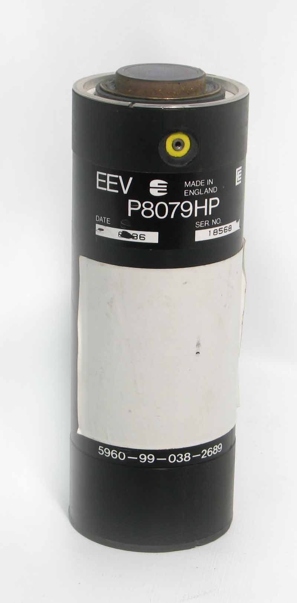
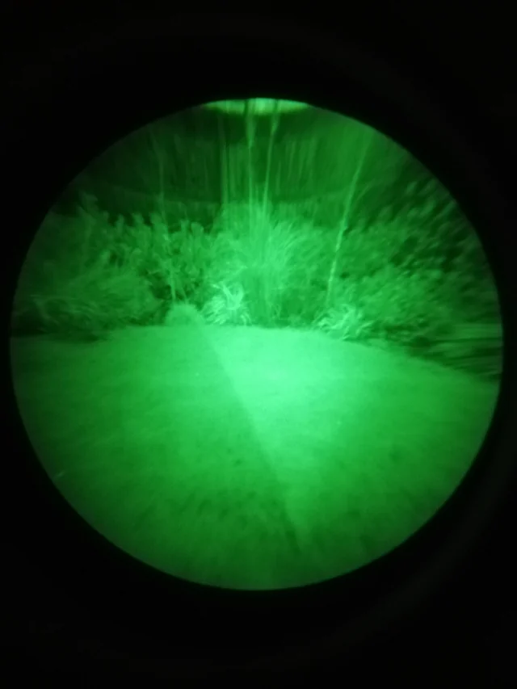

p8079hp


The P8079HP is a first generation cascade image intensifier tube. It contains 3 image intensifiers coupled together in a single housing. The tube has Automatic Brightness Control and an integrated power supply allowing it to be run straight from a 6v battery.
This tube has pretty good sensitivity and produced a pretty good image with no IR illumination.
Unfortunately the major disadvantage this tube has is size and weight. It is completely impractical for use in goggles and is much better suited to scopes, originally being used for driver and commander's sights in British armoured vehicles. It's quite popular in astronomy and stargazing groups online, as it can easily be outfitted with a fast camera lens as an objective lens and a magnifying loupe on the output. Housings have been seen made from PVC pipe fittings, 3d printed parts and machined aluminium. It also has quite a bit of pincushion distortion.
It has a large metal ring at the top (datasheet says this is the cathode), around the input fibre optic window and a threaded hole for the other connection. This thread is a little strange, being of the "3-48 UNC"
https://www.cloudynights.com/topic/570847-project-for-a-little-intensified-telescope-p8079hp-and-future-hybrid-evolution/